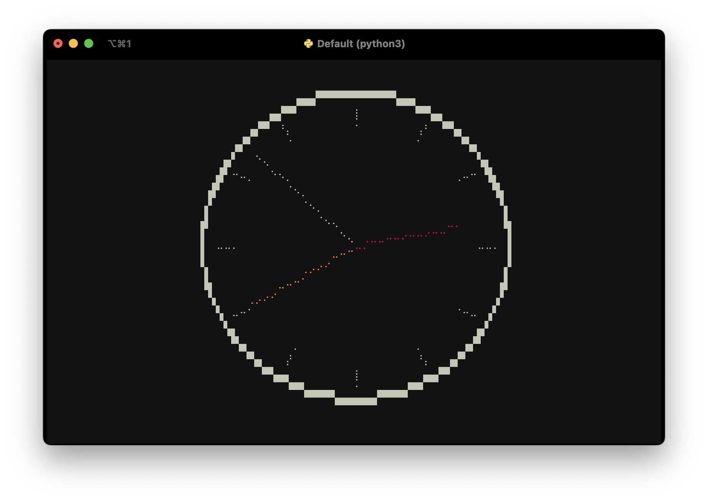

High-resolution drawing canvas for Textual apps
Textual is an excellent Python framework for building applications in the terminal, or on the web. This library provides a canvas widget which your app can draw on using primitives like set_pixel(), draw_line() and draw_rectangle_box(). The canvas can also draw using high-resolution characters like unicode half blocks, quadrants and 8-dot Braille characters. It may still be apparent that these are drawn using characters that take up a full block in the terminal, especially when lines cross. However, the use of these characters can reduce the line thickness and improve the resolution tremendously.
Screenshots


Running the demo / installation
If you have uv installed, run
uvx textual-hires-canvas
If you use pipx, replace uvx with pipx. Alternatively, install the package with pip and run the demo:
pip install textual-hires-canvas
python -m textual_hires_canvas.demo
Tutorial
A simple example of using the canvas widget in your Textual app is given below.

from textual.app import App, ComposeResult
from textual_hires_canvas import Canvas, HiResMode, TextAlign
class MinimalApp(App[None]):
def compose(self) -> ComposeResult:
yield Canvas(40, 20)
def on_mount(self) -> None:
canvas = self.query_one(Canvas)
canvas.draw_rectangle_box(0, 0, 39, 19, thickness=2)
canvas.draw_line(1, 1, 38, 18, style="green")
canvas.draw_hires_line(1, 18.5, 38.5, 1, HiResMode.BRAILLE, style="blue")
canvas.write_text(
20,
1,
"A [italic]simple[/] demo of the [bold yellow]Canvas[/]",
TextAlign.CENTER,
)
if __name__ == "__main__":
MinimalApp().run()
Here, the Canvas widget is initialised with size 40 by 20 and a rectangular box, a line, a high-resolution line and some text is displayed. Coordinates are given in (x, y) fashion where (0, 0) is the top-left corner of the widget. The draw_line() method accepts a char argument which you can pass any unicode character you'd like to draw in the terminal. The style argument accepts Textual/Rich styles like green or yellow on blue. The HiresModes are HALFBLOCK, QUADRANT and BRAILLE.
Resizing the canvas
To automatically resize the Canvas to fit the available space in your app or the terminal, you can handle the Canvas.Resize event and call Canvas.reset(size=event.size) to resize the canvas. Be aware that the canvas is cleared and you have to redraw, like this:

from textual import on
from textual.app import App, ComposeResult
from textual_hires_canvas import Canvas, HiResMode, TextAlign
class MinimalApp(App[None]):
def compose(self) -> ComposeResult:
yield Canvas()
@on(Canvas.Resize)
def draw(self, event: Canvas.Resize):
canvas = event.canvas
size = event.size
canvas.reset(size=event.size)
canvas.draw_rectangle_box(0, 0, size.width - 1, size.height - 1, thickness=2)
canvas.draw_line(1, 1, size.width - 2, size.height - 2, style="green")
canvas.draw_hires_line(
1, size.height - 1.5, size.width - 1.5, 1, HiResMode.BRAILLE, style="blue"
)
canvas.write_text(
size.width // 2,
1,
"A [italic]simple[/] demo of the [bold yellow]Canvas[/]",
TextAlign.CENTER,
)
if __name__ == "__main__":
MinimalApp().run()
The full demo code
Finally, the code of the demo is given below, showing how you can handle simple animations:
from math import floor
from textual import on
from textual.app import App, ComposeResult
from textual_hires_canvas import Canvas, HiResMode
class DemoApp(App[None]):
_box_x_pos = 0
_box_y_pos = 0
_text_x_pos = 0.0
_box_x_step = 1
_box_y_step = 1
_text_x_step = 0.5
def compose(self) -> ComposeResult:
yield Canvas(1, 1)
def on_mount(self) -> None:
self.set_interval(1 / 10, self.redraw_canvas)
@on(Canvas.Resize)
def resize(self, event: Canvas.Resize) -> None:
event.canvas.reset(size=event.size)
def redraw_canvas(self) -> None:
canvas = self.query_one(Canvas)
canvas.reset()
canvas.draw_hires_line(2, 10, 78, 2, hires_mode=HiResMode.BRAILLE, style="blue")
canvas.draw_hires_line(2, 5, 78, 10, hires_mode=HiResMode.BRAILLE)
canvas.draw_line(0, 0, 8, 8)
canvas.draw_line(0, 19, 39, 0, char="X", style="red")
canvas.write_text(
floor(self._text_x_pos),
10,
"[green]This text is [bold]easy[/bold] to read",
)
canvas.draw_rectangle_box(
self._box_x_pos,
self._box_y_pos,
self._box_x_pos + 20,
self._box_y_pos + 10,
thickness=2,
)
self._box_x_pos += self._box_x_step
if (self._box_x_pos <= 0) or (self._box_x_pos + 20 >= canvas.size.width - 1):
self._box_x_step *= -1
self._box_y_pos += self._box_y_step
if (self._box_y_pos <= 0) or (self._box_y_pos + 10 >= canvas.size.height - 1):
self._box_y_step *= -1
self._text_x_pos += self._text_x_step
if self._text_x_pos >= canvas.size.width + 20:
self._text_x_pos = -20
def main():
DemoApp().run()
if __name__ == "__main__":
main()
List of canvas methods
reset()orreset(size): clear the canvas.get_pixel(x, y): get character at pixel coordinages.set_pixel(x, y, char, style): set a character at pixel coordinates.set_pixels(coordinates, char, style): set multiple pixels.set_hires_pixels(coordinates, hires_mode, style): set high-resolution pixels.draw_line(x0, y0, x1, y1, char, style): draw a line consisting of specific characters.draw_lines(coordinates, char, style): draw multiple lines.draw_hires_line(x0, y0, x1, y1, hires_mode, style): draw a high-resolution line using a particular mode.draw_hires_lines(coordinates, hires_mode, style): draw multiple high-resolution lines.draw_rectangle_box(x0, y0, x1, y1, thickness, style): draw a rectangle using box-drawing characters.
Alternatives
Textual-canvas by Dave Pearson is much better suited to display a large bitmap image with a scrollable viewport. It uses half-block characters to create square pixels.